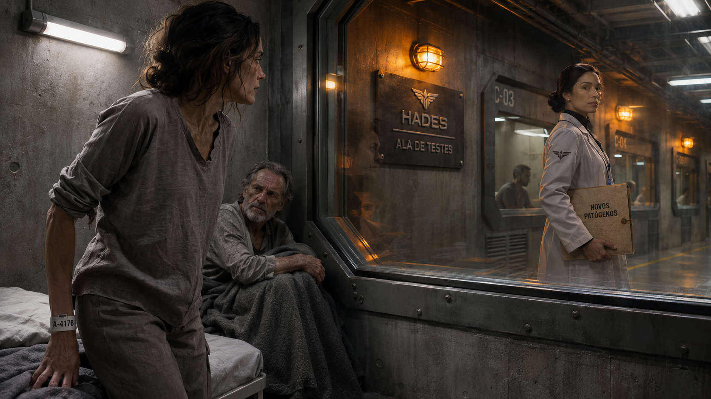

HADES // SETOR DE CONTENÇÃO
ACESSO AUTORIZADO // ARQUIVO INCOMPLETO
Ala dos Infectados
O corredor está ativo. Três celas respondem ao terminal. As imagens recuperadas não possuem identificação confirmada.
Use o mouse ou as setas. ENTER confirma a seleção.
ALA DE CONTENÇÃO // HADES −04
Corredor de celas
Escolha uma porta. O terminal não recuperou nomes nem fichas individuais.
← → SELECIONAR PORTA // ENTER ABRIRMAPA RECUPERADO // 3 ACESSOS
HADES −04 // CELA 01CÂMERA ATIVA
CAM 01 // HADES −04FRAME 01 / 04

FONTE: ARQUIVO VISUAL DA ALAVÍNCULO COM ESTA CELA NÃO CONFIRMADO
ARQUIVO NARRATIVO // ASSOCIAÇÃO INDIVIDUAL NÃO VERIFICADAESC RETORNAR AO CORREDOR